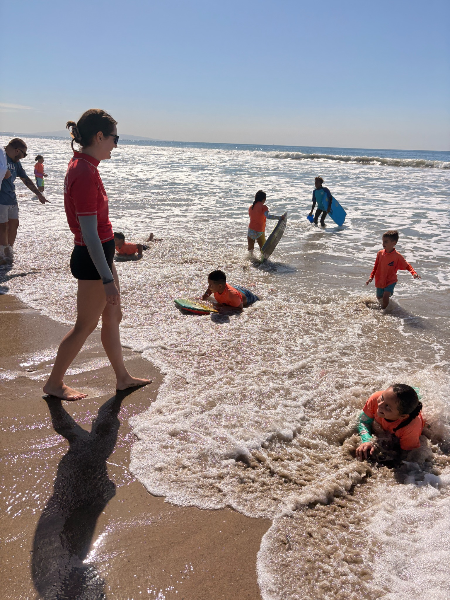
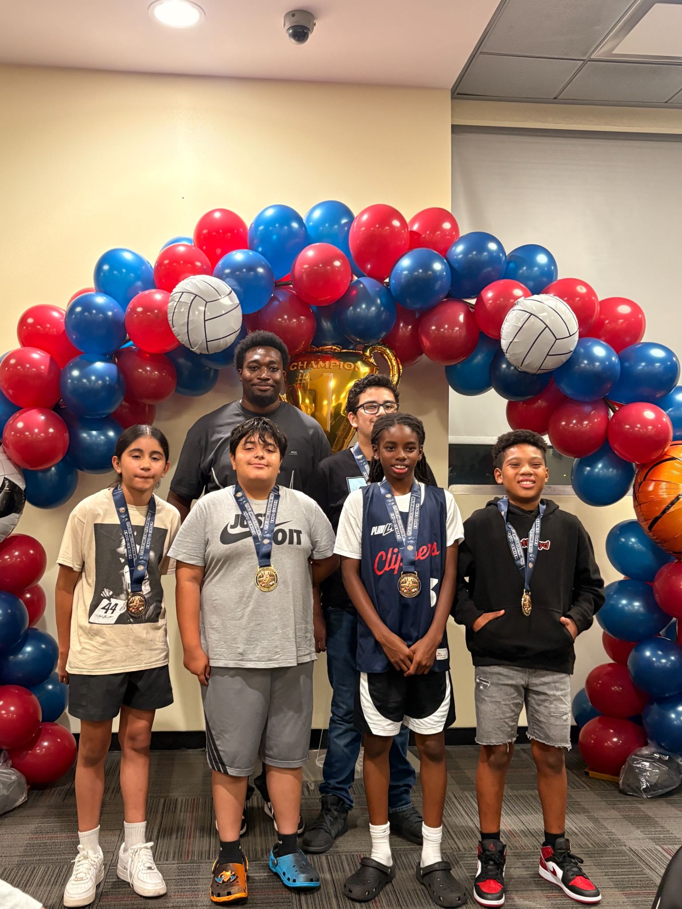
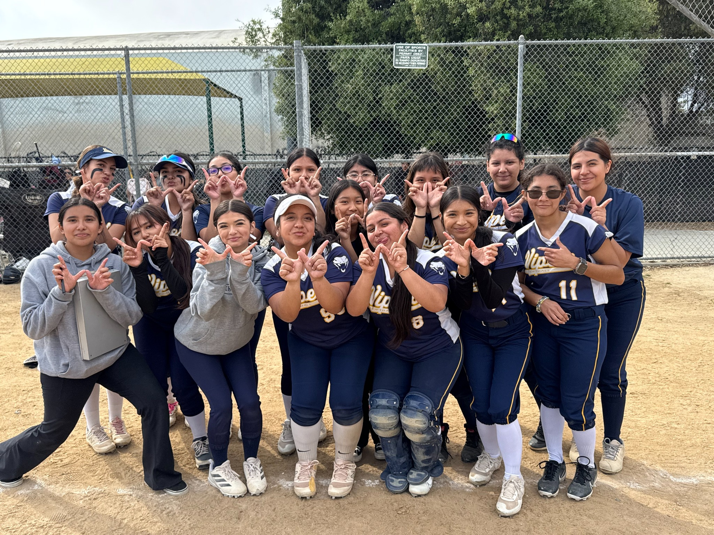
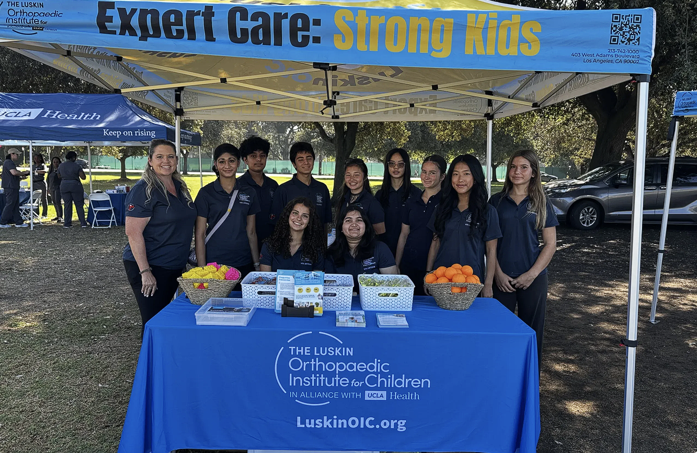
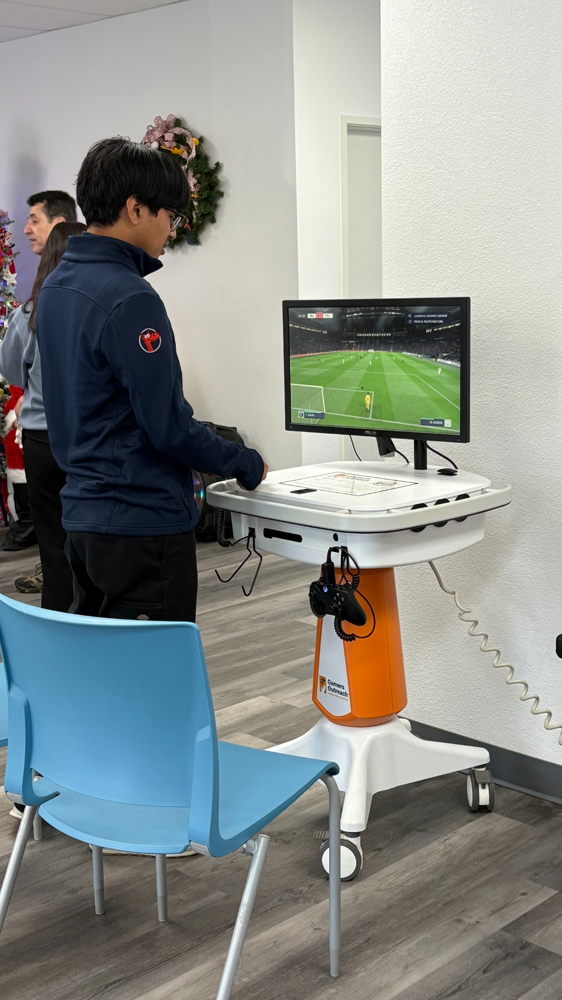

My name is Alexa Becerra, and I am a student at the University of California, Riverside, originally from Los Angeles, California. My experiences working with children, supporting community programs, and participating in student leadership have shaped my professional goals and personal values. I enjoy working with people, learning new skills, and contributing to environments where others feel supported. As I continue my education and gain professional experience, I hope to build a career that allows me to make a meaningful difference in people’s lives. I currently work in the ASEP afterschool program at The Expo Center in Los Angeles, near the USC stadium. In this role, I help children with homework, encourage positive communication, and support recreational and educational activities. I also help supervise children during field trips and other program experiences. Working in an afterschool setting gives me the opportunity to support children academically while helping create an engaging environment where they can have fun, develop friendships, and build confidence.
One of the most meaningful parts of my job is helping children work through challenges. Whether I am explaining a homework assignment, encouraging participation, or helping children communicate with one another, I try to approach each situation with patience and understanding. This position continues to strengthen my communication, teamwork, and problem-solving skills. It also teaches me how to adapt to different learning needs and personalities while balancing individual attention with the needs of a group. Before joining The Expo Center, I gained experience through babysitting and serving as a coach assistant at Ross Snyder Recreation Center. These experiences helped me develop a strong foundation in responsibility, organization, and youth supervision. Caring for children taught me the importance of being dependable and attentive, while supporting recreational activities showed me how encouragement can help young people feel more comfortable participating. Together, these roles strengthened my interest in work that involves supporting others and building community connections.
My background in athletics and student leadership has also influenced how I approach my responsibilities. As a softball captain, I learned to motivate teammates, communicate clearly, and stay focused under pressure. My experience as a mascot leader encouraged me to become more confident and comfortable connecting with others. Balancing these commitments with school helped me develop discipline and time-management skills that I continue to use in college and at work. On a personal level, my Mexican heritage and my family’s roots in Jalisco are important parts of my identity. Growing up in Los Angeles as the oldest and only daughter with three younger brothers taught me patience, adaptability, and the importance of setting a positive example. My family’s emphasis on hard work, respect, and education continues to guide my decisions. As I move forward at UCR, I look forward to expanding my knowledge, gaining new professional experiences, and strengthening my ability to serve others. With bilingual communication skills in English and Spanish and experience working with children and families, I hope to contribute to welcoming, supportive communities wherever my career takes me.
• Help children with homework and explain assignments clearly
• Encourage positive communication and teamwork among students
• Support fun educational and recreational activities
• Help supervise children during field trips and program activities.
• Welcomed patients and assisted with check-in.
• Helped schedule appointments and answer phone calls.
• Organized office supplies and patient forms.
• Supported staff with daily administrative tasks.
• Assisted with youth practices and recreational activities.
• Encouraged teamwork, participation, and good sportsmanship.
• Supported children as they developed skills and confidence.




